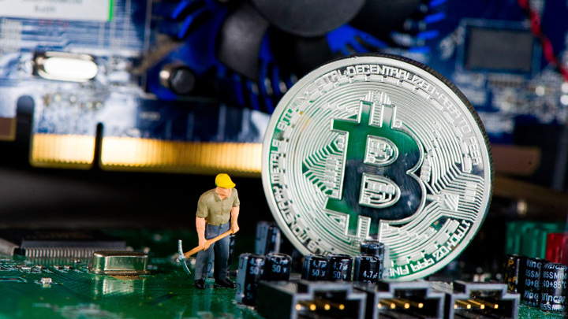
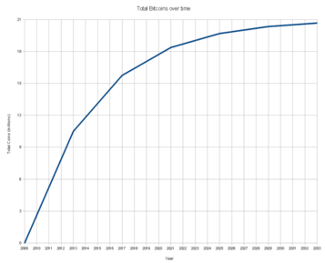
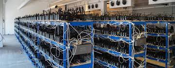

Що взагалі таке BITCOIN
ЦЕ децентралізована електронна платіжна система, концепт якої був опубліковани й 2008 року Сатоші Накамото, і реалізований ним у 2009 році. Для скорочення замість слова «Bitcoin» часто використовується абревіатура BTC.
Застосування
Система покладається на криптографічні принципи підтвердження прав розпорядження біткойнами. При цьому самі біткойни ніяк не кодуються і є лише цифровим записом їх кількості, яка доступна володарю приватного (закритого) ключа зазначеної адреси для передачі на будь-яку (навіть неіснуючу) іншу адресу. Користувачі зберігають криптографічні ключі до своїх адрес. Зазвичай для цього використовується файл, який називають гаманцем (англ. wallet). У такому файлі не зберігаються самі біткойни, а лише ключі доступу до відповідних адрес. А біткойни завжди «прив'язані» саме до своєї поточної адреси і будь-хто завжди може перевірити поточний стан будь-якої адреси, навіть не знаючи жодного ключа. При здійсненні транзакції користувач вказує бажану до передачі кількість біткойнів, адресу отримувача (яка формується з відкритого ключа отримувача) і підписує це своїм особистим закритим ключем. Комп'ютер отримувача не повинен мати постійного підключення до мережі, досить лише надати відправнику свою адресу, яку можна генерувати без зовнішніх підключень. Пірингова мережа перевіряє відповідність адреси відправника і сформованого електронного підпису. Зазвичай одержувач майже миттєво бачить транзакцію, але спочатку як «непідтверджену». Транзакція може бути недійсною через конфлікт транзакцій (наприклад, коли відправник направляє ті самі біткойни двом одержувачам). Це може статися коли у програмному забезпеченні відправника є помилка або коли він навмисно робить спробу шахрайства. Щоб запобігти подвійному використанню одних і тих самих біткойнів, всі транзакції транслюються іншим учасникам, потім вони групуються у блоки, які додаються у ланцюг блокчейн, які пов'язані не тільки номером, але і збереженням у поточному блоку хешу попереднього блоку. Цей процес робить неможливим переписування історії транзакцій, не маючи при цьому обчислювальної потужності, більшої ніж сукупна потужність решти мережі Bitcoin. Включення транзакції до блоку вважається її «підтвердженням». Після цього інша транзакція з тими самими біткойнами буде вважатись помилковою, не буде включатись до чергового блоку і не отримає свого «підтвердження». Вузли, що обробляють блоки транзакції, винагороджуються від системи фіксованою кількістю нових біткойнів, до яких додаються добровільні комісійні відрахування користувачів. Рівень складності при формуванні блоку регулюється системою так, щоб середній час між появою двох блоків становив 10 хвилин. Усі учасники системи перевіряють чинність кожної транзакції й кожного блоку, та ігнорують ті, що порушують правила. Наразі кількість монет в обігу системи становить понад 16.7 млн. Фактично, сьогодні система Біткойн — це хмарна мережа розподіленої бази даних.
Ціна
Майнінг Діяльність зі створення нових блоків заради можливості отримати винагороду в формі емітованих біткойнів і комісійних зборів отримала назву «майнінг». Випуск нових біткойнів децентралізований, не залежить від будь-якого регуляторного органу, обсяг емісії відомий заздалегідь. Стандартна порція нових біткойнів додається до суми комісій з транзакцій, включених в черговий блок. Загальну суму винагороди отримує той, хто додав черговий блок в базу транзакцій. Після формування кожних 210 000 блоків (приблизно раз на 4 роки) запрограмовано розмір винагороди новими біткойнами зменшувати вдвічі, тобто це значення є спадною геометричною прогресією. Загальний обсяг емісії біткойнів обмежений аналогічно сумі членів спадної геометричної прогресії і не перевищить 21 млн. На травень 2014 року в обігу перебувало 12,7 мільйона біткойнів. Спочатку розмір емісії при створенні блоку становив 50 біткойнів. 28 листопада 2012 відбулося перше зменшення емісійної нагороди з 50 до 25 біткойнів. Наступна зміна відбулась приблизно наприкінці липня 2016 року. 2031 року емісія буде зупинена зовсім (розмір винагороди 50 → 25 → 12.5 → … → 0). Формування блоків продовжиться й далі, але за них вже не буде фіксованої винагороди новими біткойнами. Передбачається, що поступово основним джерелом винагороди за формування нових блоків стануть комісійні збори. Станом на 2021, за оцінкою дослідників, на майнінг витрачається 121 терават-годин електроенергії на рік, що приблизно відповідає рівню споживання електроенергії у таких країнах як Аргентина, Україна та Норвегія. Кількість електроенергії, витраченої на майнінг постійно зростає.
  Глобальні перспективи
- Amazon
- У результаті переговорів з компанією Amazon було досягнуто домовленості про можливість оплати біткойнами в її інтернет-магазинах
- Хостинг
- Біткойни на добровільних засадах приймають у сотнях західних магазинів електроніки, косметики, компаніях з надання послуг хостингу, замовлення їжі, лотереї, віртуальні ігри тощо
- WikiLeaks
- Слід згадати й про політичний компонент: після численних випадків закриття рахунків проєкту WikiLeaks у традиційних платіжних системах цей проєкт продовжив фінансування через біткойни.
Інші криптовалюти
-
 XRP
XRP
-
 LITECOIN
LITECOIN
-
 CARDANO
CARDANO